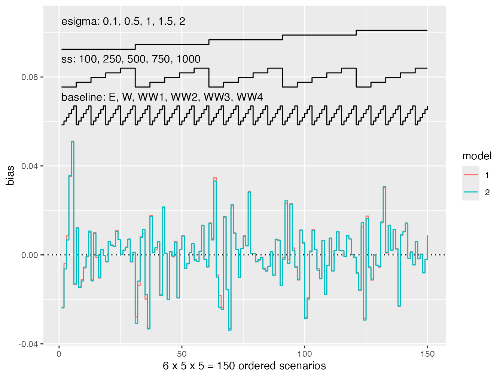

As of version 0.6.0, rsimsum supports the fully automated creation of nested loop plots (Rücker and Schwarzer, 2014).
library(rsimsum)
A dataset that can be purposefully used to illustrate nested loop plots is bundled and shipped with rsimsum:
data("nlp", package = "rsimsum")
This data set contains the results of a simulation study on survival modelling with 150 distinct data-generating mechanisms:
head(nlp) #> dgm i model b se baseline ss beta esigma pars #> 1 1 1 1 0.17119413 0.2064344 E 100 0 0.1 0.5 #> 2 1 1 2 0.19822898 0.2048353 E 100 0 0.1 0.5 #> 3 1 50 2 -0.03404229 0.2071766 E 100 0 0.1 0.5 #> 4 1 82 1 -0.09263968 0.2040281 E 100 0 0.1 0.5 #> 5 1 82 2 -0.05095914 0.2026813 E 100 0 0.1 0.5 #> 6 1 33 1 -0.17013365 0.2038076 E 100 0 0.1 0.5
Further information on the data could be find in the help file (?nlp).
We can analyse this simulation study using rsimsum as usual:
s <- rsimsum::simsum( data = nlp, estvarname = "b", true = 0, se = "se", methodvar = "model", by = c("baseline", "ss", "esigma") ) #> 'ref' method was not specified, 1 set as the reference s #> Summary of a simulation study with a single estimand. #> True value of the estimand: 0 #> #> Method variable: model #> Unique methods: 1, 2 #> Reference method: 1 #> #> By factors: baseline, ss, esigma #> #> Monte Carlo standard errors were computed.
Finally, a nested loop plot can be automatically produced via the autoplot method, e.g. for bias:

However: